Hadoop
PART A Hadoop 集群安装
环境
- 使用Ubuntu 16.04 64位作为master的环境
- 在ubuntu 上安装kvm 虚拟机，开启两台Ubuntu 16.04 的虚拟机作为slave。
- 在三台机器上安装 Hadoop 2.7.3
创建新的用户hadoop
创建新的用户hadoop，配置hadoop集群的三个用户的用户名都是hadoop，现在先在物理机上（也是master）上先创建hadoop 用户，之后在虚拟机中也是创建hadoop用户。
安装kvm
kvm 是基于内核的虚拟机。
在安装之前，先进去bios 模式中，确认开启了内核的虚拟化。一开始就是没有开启，结果安装不成功。
确认开启后。安装命令
1 | sudo apt-get install qemu-kvm libvirt-bin virtinst bridge-utils cpu-checker |
安装成功后，搜索应用程序virt-manager，打开后会发现就像vmware的操作一样，很容易管理。
kvm 默认的网络连接是NAT的，我们的，NAT的话虚拟机是无法被外网的服务器所访问到的，但是在我们的项目中是足够，我们只需要三台机器能够互联即可。因此就也没有必要去配置桥连接，使用默认的设置即可。
接下来我们创建两台虚拟机slave1和slave2
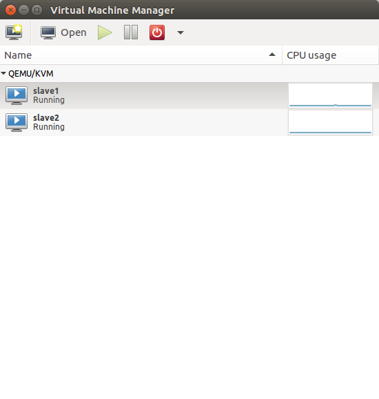)
安装 SSH server
先在master上，安装ssh 和java，另外的两台虚拟机也需要同样安装。
集群、单节点模式都需要用到 SSH 登（类似于远程登陆，你可以登录某台 Linux 主机，并且在上面运行命令），Ubuntu 默认已安装了 SSH client，此外还需要安装 SSH server：
1 | sudo apt-get install openssh-server |
之后用于master 和slaver的通讯，密钥配置在后面解释，能够无密码登陆。
安装 Java 环境
安装好java ，设置好环境变量。
安装 Hadoop 2.7.3
从官网镜像下载stable 中的2.7.3中的文件。然后将hadoop 安装在／usr／local中
1 | sudo tar -zxf ~/Download/hadoop-2.7.3.tar.gz -C /usr/local #解压到/usr/local中 |
查看 hadoop 的版本号，确认安装成功。
slave 环境配置
在slave1 和slave2 中同样安装 ssh server 和 java 环境，先不用安装hadoop ，之后会在master 配置好，直接副本传递给他们。
master和slave通讯设置
先修改各个节点的主机名：分别为master，slave1，slave2。
1 | sudo vim /etc/hostname |
查看主机和虚拟机的ip地址，用ifconfig命令。
然后执行如下命令修改自己所用节点的IP映射
1 | sudo vim /etc/hosts |
本机的修改如下：
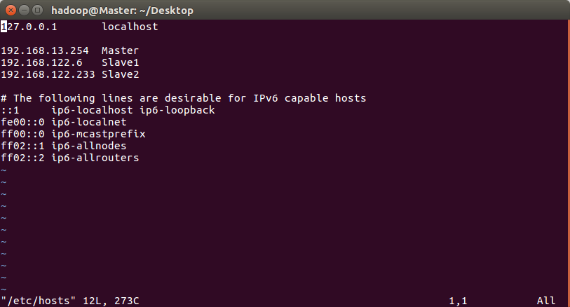
(hostname 修改重启生效）
ssh无密码登陆节点
这个操作是要让 Master 节点可以无密码 SSH 登陆到各个 Slave 节点上。
执行以下命令，并将密钥传给两个slave。
1 | cd ~/.ssh # 如果没有该目录，先执行一次ssh localhost |
在slave1和slave2中分别执行以下代码，使密钥生效。
1 | scp ~/.ssh/id_rsa.pub hadoop@Slave1:/home/hadoop/ |
测试是否可以正确无秘钥登陆。
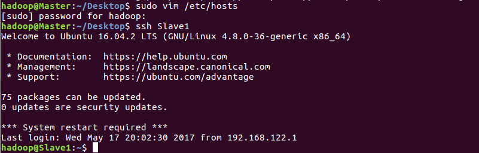
配置集群/分布式环境
++先在 ~/.bashrc加入hadoop的环境变量。++
对基本的五个文件进行配置，slaves、core-site.xml、hdfs-site.xml、mapred-site.xml、yarn-site.xml 。
- slave 中删掉默认的loacalhost，添加上slave1和slave2。
core-site.xml
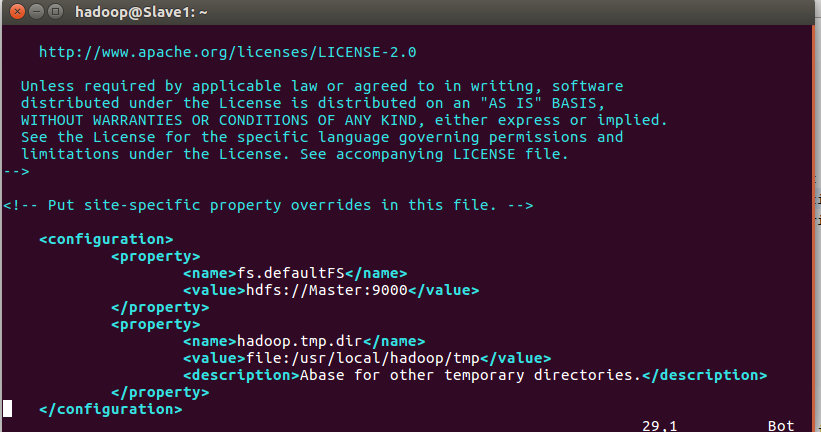hdfs-site.xml
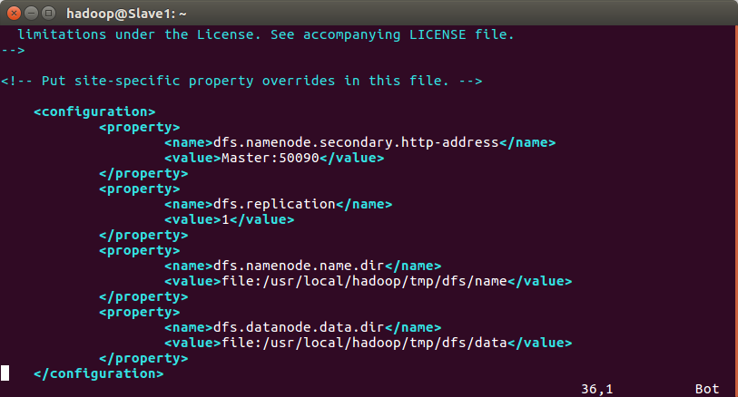- mapred-site.xml
替换掉默认文件 mapred-site.xml.template
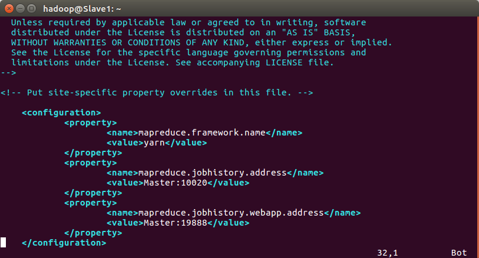
- mapred-site.xml
yarn-site.xml
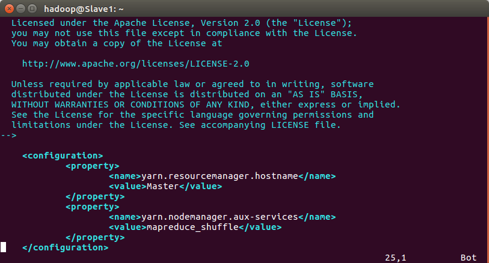
配置好，此时要将hadoop 备份直接拷贝给两个slave，这里用 了scp 远程拷贝的命令。
在 Master 节点上执行：
1 | cd /usr/local |
在两个slave 上执行
1 | sudo rm -r /usr/local/hadoop # 删掉旧的（如果存在） |
启动hadoop
到此，环境已经搭配好了，启动起来试试。
首次启动需要先在 Master 节点执行 NameNode 的格式化：
1 | hdfs namenode -format # 首次运行需要执行初始化，之后不需要 |
接着启动hadoop
1 | start-all.sh |
通过jps命令查看Master和slave上的进程
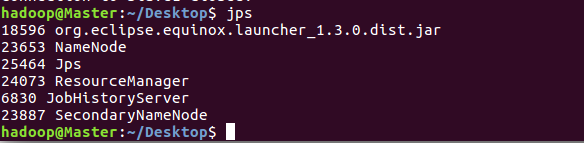
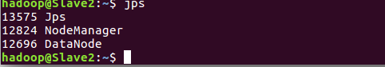
通过 Web 页面看到查看 DataNode 和 NameNode 的状态：http://master:50070/ 和 任务状态http://master:8088/
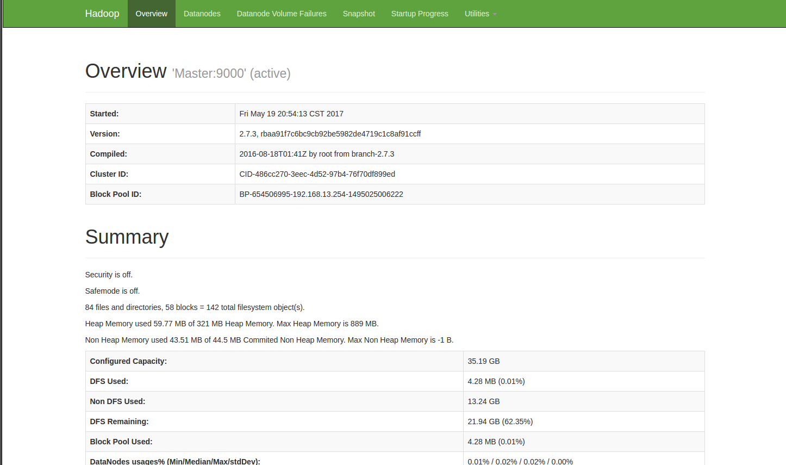
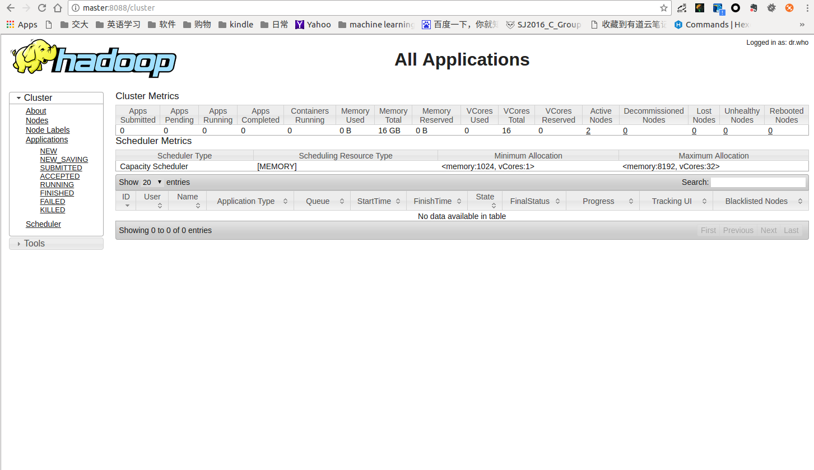
PART B code of MapReduce
要求编写map reduce 程序，打算配置下eclipse 方便能够调试，先下载了eclipse 然后下载了eclipse-hadoop 插件，也成功的连接起来了。 看下图中的MapReduce localtion是能够连接到HDFS的
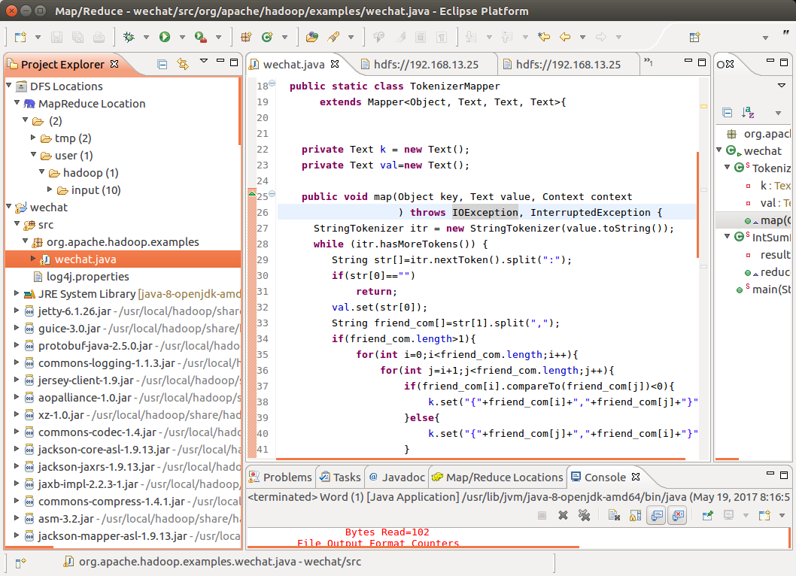
但是部署的时候发现一直能办法把写好的程序的jar 上传到分布式的环境上去，一直报找不到。但是在单机模式hadoop 是可以用eclipse 跑起来的，后来看到网上有人说有eclipse 在本地调试程序，成功后在用命令行部署到分布式的环境中去。我也是写好调通后，导出jar包，再用命令行部署到云端去。
lab 中要求实现一个累屎微信共同好友的mapreduce 任务。逻辑很简单，因为每个的好友都给了出来，那么map 中做的任务就可以是将一个人 A 的好友两两组合，作为key，他们的共同好友那就A ，A作为value。因为两个人有共同好友，那么他们的一定都在这个 共同好友的朋友中，所以这样是能够找到全部人的。这里还有一个问题就是组合的前后顺序问题，因为 A B和B A应该是同一对的，所以map组合的时候要比较下两个人的名字，默认将小的放在前面即可。
Reduce 函数中就简单将所有相同key的value合并起来即可。
代码如下
1 | package org.apache.hadoop.examples; |
参照 wordcount 程序修改的
导出jar包后上传到分布式环境运行
结果在part C中给出。
PART C Output
执行结果如下：
具体的全部结果会附在文档的另一个文件中
为了测试正确性，将input改成了文档中给出的那个简单的例子的，得到的ouput 如下：
和文档的结果一致。
在执行的某一过程中关闭某个task，命令如下：
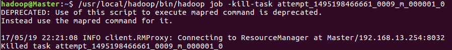
task_id 可以从master：8080中找到，注意后面还要加_0.
从UI中看到任务确实被关闭了
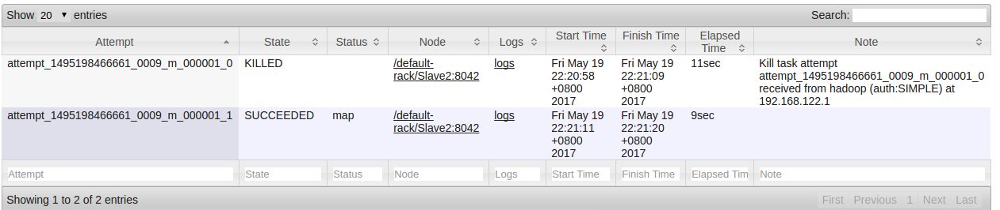
可以看到一个task被关闭或者中断后，它会重启另外一个task来完成它的任务，这个task可能是在slave1上，也可能在slave2上，这里是在slave2上。所以可以看出一个task 被关闭后会启动其它的来代替它